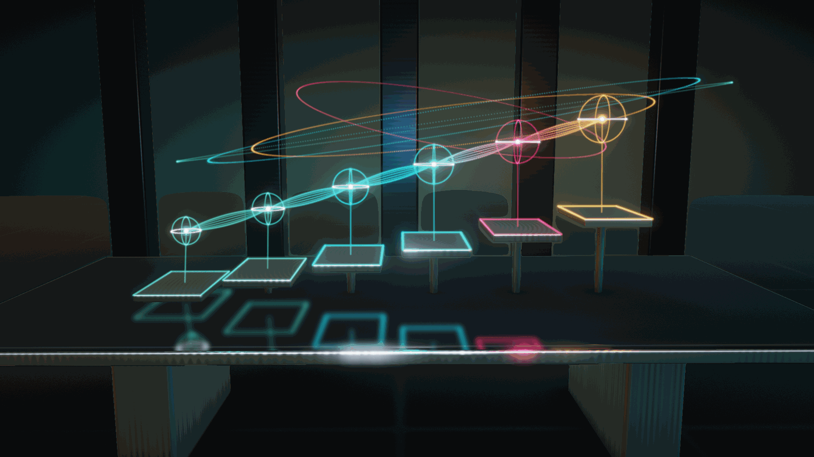
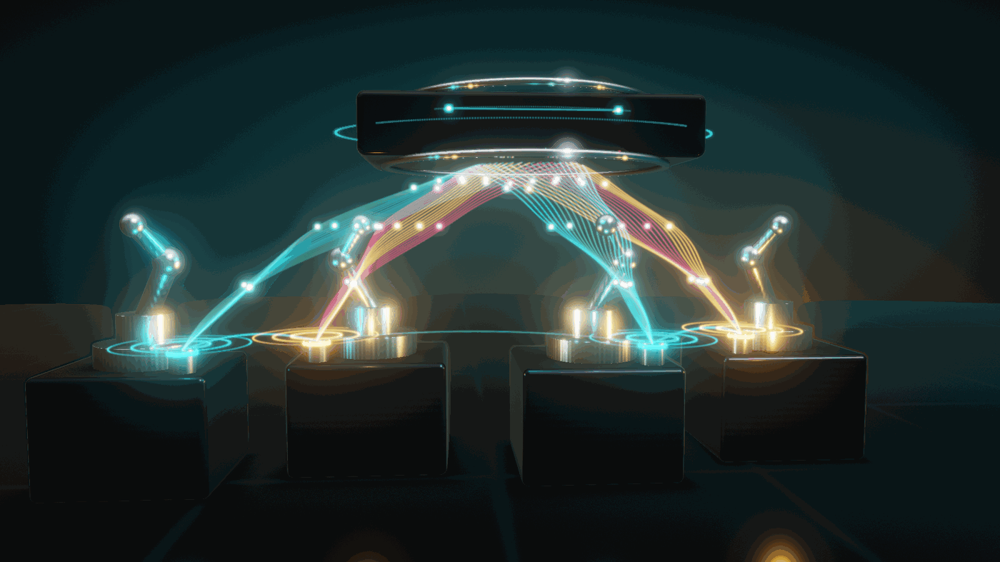
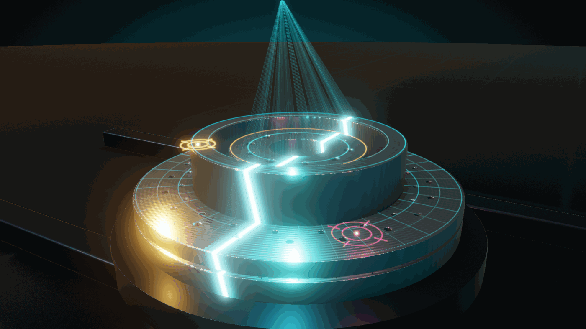

+30 anos
de expertise industrial e executiva acumulada do chão de fábrica à estratégia
“Dados de chão de fábrica do mundo físico para o mundo lógico. Sem dado, a aplicação de Inteligência Artificial de forma ampla não é eficaz. A SmartInovaT resolve as duas pontas: conecta o que gera o dado e constrói o que o transforma em decisão.”
Uma empresa de nova geração construída sobre mais de 30 anos de expertise industrial real: a bagagem executiva de quem montou linha alemã, executou retrofitting de centros de usinagem CNC e ergueu planta fabril do alicerce ao ERP — hoje aplicada na arquitetura, desenvolvimento e operação de plataformas modernas de Inteligência Artificial em produção. Nem consultoria que terceiriza a execução, nem casa de software que desconhece a máquina.
de expertise industrial e executiva acumulada do chão de fábrica à estratégia
da usinagem dos tambores de freio da Mercedes-Benz Caminhões implantada
unidade industrial têxtil construída integralmente do alicerce ao ERP e ISO
planta de fiação com modernização produtiva e gestão de manutenção de ativos
dedicados continuamente a IoT, M2M, LPWAN e Indústria 4.0 em campo
aplicações web próprias em produção, construídas e operadas em domínios distintos
Nascida em 2025 para unir o mundo físico à decisão com IA, a SmartInovaT traz em sua liderança técnica mais de três décadas de experiência acumulada e verificada em campo (1994–hoje) — da automação pneumática, montagem de maquinário alemão e retrofitting CNC à direção de centros de inovação e construção própria de software em produção.
Diagnóstico de maturidade Indústria 4.0 pelo ACATECH Maturity Index vivenciado em operação real — traduzido em roadmap sequenciado por retorno financeiro, nunca discurso genérico de catálogo.
Diferencial raro em consultorias de tecnologia: inovação estruturada como sistema contínuo pela ISO 56002 combinada à governança responsável e auditável de IA pela ISO 42001.
Nove sistemas web completos construídos e operados pela própria SmartInovaT em domínios distintos — provando domínio real de engenharia de software, segurança, dados e IA generativa.
Histórico comprovado em plantas de 850 t/mês e 1.500 t/mês, implantação de ERP, ISO 9001/14000, comércio exterior com a Alemanha e 100% da usinagem de linha Mercedes-Benz Caminhões.
Desenvolvimento de soluções técnicas de automação em integração direta com Spirax Sarco, Rexroth (Divisão Pneumática), ASCOVAL, Ashcroft, Compair e Domnick Hunter, com treinamentos técnicos em plantas industriais.
Construção integral de unidade de malharia e beneficiamento de 850 t/mês: obras civis, mecânicas, elétricas e TI, seleção de maquinário, sistemas de integração produtiva em toda a cadeia, implantação de ERP e certificações ISO 9001 e 14000.
Modernização e atualização tecnológica em unidade de fiação de 1.500 t/mês, novos projetos fabris, adequação aos sistemas da qualidade ISO 9002 e 14000 e estruturação da gestão patrimonial e de manutenção de ativos.
Engenharia de negócios internacionais, importação/exportação, business plans para unidades industriais da construção civil e operação direta de comércio exterior com a Alemanha, além de direção de projetos exportadores industriais junto ao SEBRAE.
Coordenação executiva entre montagem pesada, produção e manutenção da máquina de moldar alemã KÜNKEL WAGNER, incluindo tradução técnica de manuais, alarmes, interfaces de operação (IHM) e capacitação de equipes.
Implantação de 100% da usinagem dos tambores de freio da Mercedes-Benz do Brasil / Caminhões, usinagem de discos e tambores e retrofitting completo de centros de usinagem, tornos CNC e máquinas-ferramenta.
Quase onze anos dedicados a sistemas de monitoramento de máquinas wireless em tempo real, soluções M2M para assistência remota, IoT, redes LPWAN, sistemas de visão, energias renováveis, lean manufacturing e maturidade digital.
Direção tecnológica e gestão de inovação pela norma ISO 56002, implantação de centros corporativos de inovação (i-hub), aplicação em campo do ACATECH Maturity Index e pesquisa aplicada de sistemas na UNIFOR.
Integração de dados do mundo físico para o lógico em tempo real, desenvolvimento e operação de 9 aplicações próprias com IA, transformação Indústria 4.0, modelagem de negócios e governança executiva ISO 56002 & ISO 42001.
Nenhuma das nove plataformas abaixo é revenda ou adaptação de software de prateleira. Todas foram projetadas e codificadas pela própria SmartInovaT para necessidades reais distintas — de diagnóstico de processos e treinamento corporativo gamificado a estúdio de vídeo com avatar digital, mesa quantitativa em tempo real, identidade federada Keycloak e renderização vetorial complexa. Explore cada demonstração interativa integrada diretamente aqui ou em nova aba local.
O erro mais caro na indústria é comprar sensores, painéis ou licenças de IA sem saber onde o dado morre hoje. Aplicamos o ACATECH Industrie 4.0 Maturity Index em campo para traduzir maturidade técnica em plano de investimento sequenciado pelo retorno financeiro.

Enquanto integradores tradicionais param na coleta do sinal elétrico e consultorias digitais esperam receber planilhas prontas, a SmartInovaT projeta a ponte física na máquina e a camada algorítmica que transforma telemetria em previsibilidade operacional.

O dado não pode morrer dentro do comando da máquina nem depender de apontamento em papel no fim do turno. Com base em quase 11 anos de monitoramento industrial sem fio e experiência real em retrofitting de centros de usinagem e tornos, conectamos parques fabris novos ou legados direto à nuvem e ao ERP.

Quando o dado flui com confiabilidade, estruturamos capacidades de engenharia de IA para atacar perdas reais: inspeção óptica automatizada em pontos onde a fadiga visual humana gera refugo, modelos preditivos sobre histórico de máquina para antecipar paradas e agentes inteligentes para processos repetitivos.
Você não precisa saber qual protocolo ou modelo de IA contratar — basta reconhecer onde sua operação perde eficiência, margem ou segurança hoje. Clique na dor mais próxima do seu cenário para visualizar a arquitetura recomendada e as provas correspondentes.
Inspeção transparente das 6 camadas tecnológicas operadas pela SmartInovaT — unindo sensores e retrofitting no chão de fábrica a React/Next.js, identidade federada Keycloak, containers isolados e normas internacionais de governança.
Tecnologia sem governança gera dependência de “pessoas iluminadas” ou risco jurídico e operacional com uso sombra de IA. Estruturamos o processo decisório da sua empresa e oferecemos 5 formatos claros de contratação — do diagnóstico avulso de escopo fechado ao software sob medida.
Selecione a frente prioritária e descreva resumidamente o contexto operacional na caixa abaixo para encaminhamento direto à liderança técnica da SmartInovaT.
Envie seu desafio operacional diretamente para análise técnica e estratégica da SmartInovaT.
Como estruturamos diagnósticos, conectividade de parque fabril legado, governança de IA e projetos de software sob medida.